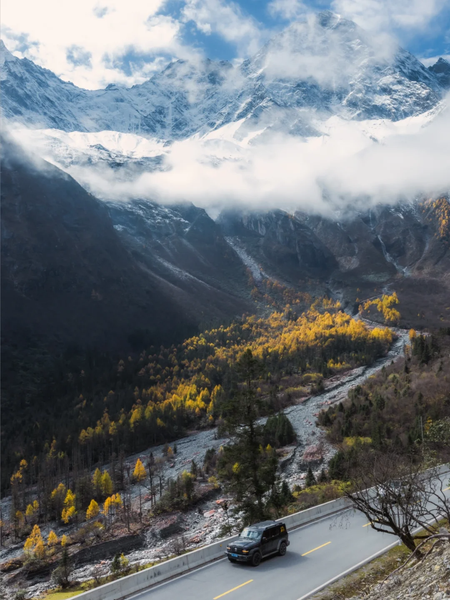
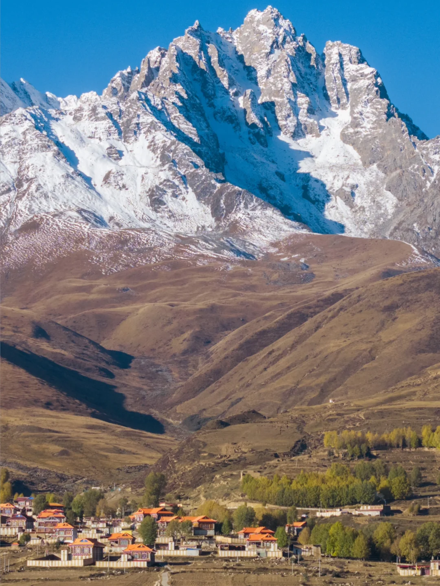
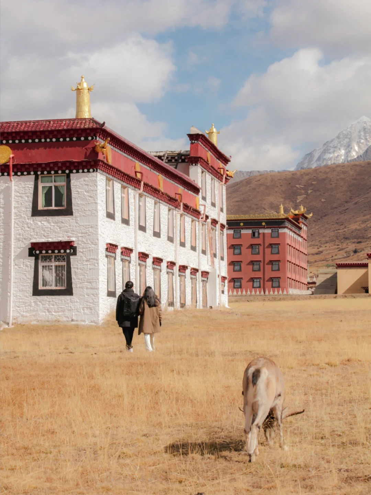
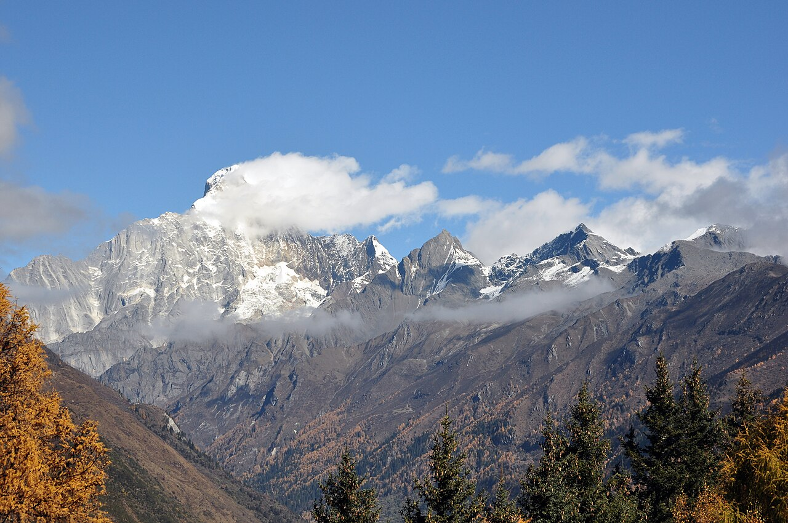
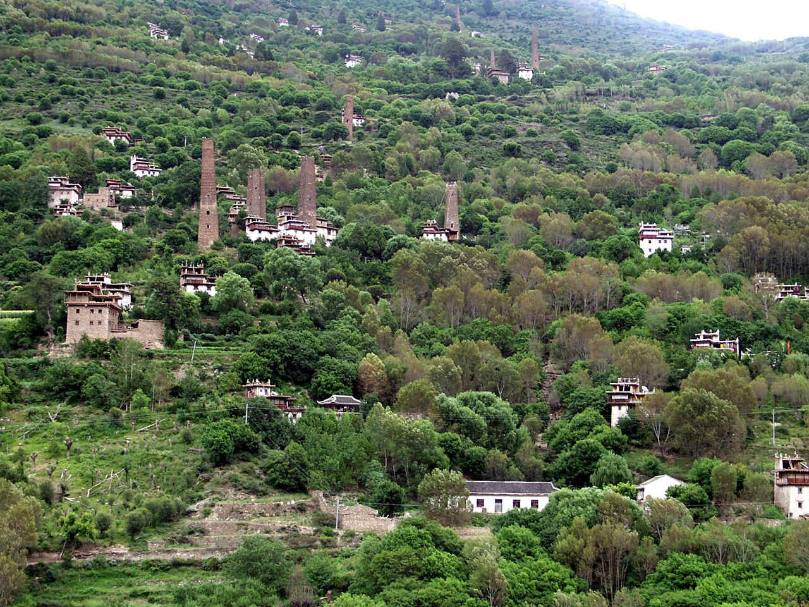

核心取舍：7 天 6 夜无法同时安全覆盖稻城亚丁、四姑娘山、318 主线和多个网红点。本方案放弃稻城亚丁，保留甘孜腹地与小众支线，减少热门景区排队；如果必须加入亚丁，建议至少增加 3 天。
建议行程7 天 / 6 晚
推荐驾驶员至少 2 人
主策略不走 318 主峰
适合人群能接受长距离转场
路线总览
上方示意图以 A 方案（阿坝北线 / 甘孜腹地）为例；切换到 B 方案后，下方交互地图的节点会同步换成四姑娘山方向。
下方交互地图需要网络加载 OpenStreetMap 底图；上方示意图无需联网。
7 天 6 夜安排
主线总里程约 1,450–1,550 km不含玉科 / 党岭等备选支线
纯驾驶时间约 27–30 小时不含堵车、休息、拍摄和补给
最长转场D3 · 482 km马尔康 -> 炉霍 -> 甘孜
最灵活节点D4 · 可删可加天气、体力和车辆缓冲日
里程和驾驶时间为高德当前驾车规划的参考值；实际需要按国庆车流、临时管制、雨雪、停车和中途停留重新估算。
D1 成都 → 理县 低至中
187 km约 2h43住理县约 1,900m
渐进进入阿坝，住理县。若当天才抵达成都，不要再赶往马尔康。
打开高德路线
D2 理县 → 马尔康 中
129 km约 1h42住马尔康约 2,600m
以转场和沿途村寨为主，避开四姑娘山景区入口；下午留给补给和休息。
打开高德路线
D3 马尔康 → 炉霍 → 甘孜 高
482 km约 9h17甘孜约 3,400m
全程最累的一天，不安排景区打卡；中途只做必要休息、加油和充电。
打开高德路线
D4 甘孜慢游 低
约 30–90 km约 1–3h县城约 3,400m
安排卡萨湖、县城或近郊点，作为天气、身体和车辆缓冲日；不建议硬追远线。
D5 甘孜 → 道孚 中
166 km约 3h09道孚约 3,000m
进入道孚，住县城。墨石、塔公只能择一短停，不要当天继续叠加支线。
打开高德路线
D6 道孚 → 玉科/党岭 → 丹巴 高
主线 163 km约 3h25垭口约 3,800m+
道孚→丹巴主线约 163 km；玉科/党岭支线会额外增加 2–4 小时。雨雪、浓雾或信号不稳时直接走主线。
打开主线导航
D7 丹巴 → 成都 中高
约 350–380 km约 6–8h持续下撤 / 返程拥堵
只做返程，不再叠加四姑娘山；国庆返程高峰预留半天到一天缓冲，不要接当天航班。
打开高德路线
总里程约 1,100–1,250 km含景区往返与短停
纯驾驶时间约 23–27 小时不含景区内游玩与排队
核心停留D2 · 双桥沟一日只选一沟，不再叠加
主要风险人流 + 高海拔四姑娘山镇约 3,200m
B 方案删除马尔康、炉霍、甘孜深线，换取四姑娘山完整停留和更宽松的返程；里程为规划参考值，国庆需按车流重新估算。
D1 成都 -> 四姑娘山镇 中
约 210–230 km4–5h住约 3,200m
经理小路或巴郎山进入，下午只做入住和镇上短逛；雨雪时不要继续赶丹巴。
在高德查看四姑娘山镇
D2 双桥沟一日 中
景区 6–8h高人流高海拔徒步短
只选一沟，推荐双桥沟：摆渡车完成主要移动。旺季一早进沟，不再叠加长坪沟和海子沟。
在高德查看双桥沟景区
D3 四姑娘山 -> 丹巴 中
约 170–200 km4–5h住丹巴约 1,900m
住丹巴，中路和甲居二选一；不建议当天两个藏寨都跑完。
在高德查看丹巴县城
D4 丹巴 -> 道孚 中
约 163 km约 3h25住约 3,000m
舒服的山地转场日，抵达后留给县城、人文和休息，不再追多个网红点。
在高德查看道孚县城
D5 道孚 -> 塔公 / 墨石 -> 新都桥 中
约 150–200 km4–5h择一短停
塔公草原、墨石公园二选一；雨季把垭口当作通过点，晚上住新都桥。
在高德查看新都桥
D6 新都桥 -> 康定 低至中
约 80–100 km2–3h恢复下撤日
白天慢慢下撤，天气好再加鱼子西或贡嘎观景台；不建议同时追多个日落机位。
在高德查看康定
D7 康定 -> 成都 中高
约 330–350 km5–7h返程拥堵
只做返程，国庆最后两天至少留半天到一天缓冲，不接当天紧张航班。
打开高德路线
方案对比：怎么选？
两个方案的逐日行程可以在上方“7 天 6 夜安排”里切换查看；这里并排给出取舍依据。核心不是多塞一个景点，而是决定你要雪山密度，还是低拥堵和路线纵深。
方案 A · 当前默认保留甘孜腹地，牺牲热门雪山
适合想看路线纵深、藏区人文和低密度风景的人。四姑娘山不放进 7 天主线，D4 继续作为天气和身体缓冲日。
低拥堵优先主风险：D3 约 482 km 长转场
景色类型：河谷、草原、湖泊、藏寨
优点景区排队少，支线可以按天气删减，路线有撤退空间。
代价看不到四姑娘山完整雪峰景观，阿坝段以转场和村寨为主。
不要再叠加稻城亚丁、格聂南线和四姑娘山都不适合同时塞进这条 7 天路线。
方案 B · 雪山优先四姑娘山 -> 丹巴 -> 道孚 -> 塔公/新都桥
删掉马尔康、炉霍、甘孜深线，把时间换成四姑娘山完整停留和更轻松的返程节奏，逐日安排见上方行程区。
约 1,100–1,250 km纯驾驶约 23–27 小时
主风险：旺季人流 + 3,200m 以上高海拔
双桥沟：最推荐观光车覆盖、景色类型丰富、徒步压力相对低，最适合第一次去和 7 天窗口。
长坪沟：徒步版森林和雪山更有纵深，但需要更长徒步或骑马，建议额外留半天到一天。
海子沟：不建议硬塞体力和海拔要求最高，除非队伍明确以徒步为主，否则只保留为下一次专线。
推荐组合：第一次去、优先看雪山选 B（D2 双桥沟 + D3 丹巴中路 + D5 道孚/墨石二选一）；优先低拥堵、想看甘孜腹地保留 A。切换按钮在“7 天 6 夜安排”区顶部，切换后下方交互地图节点也会同步变化。
除了四姑娘山，还能加什么？
| 备选点 | 与 B 方案兼容度 | 建议增加时间 | 新增景色 | 怎么放 |
|---|
| 丹巴中路 / 甲居 | 强兼容 | 0.5–1 天 | 藏寨、古碉、晨雾 | D3 住丹巴，二选一，不要两个全打卡 |
| 道孚 / 墨石 / 塔公 | 兼容 | 半天–1 天 | 草原、异质地貌、垭口 | D5 选一个主点，另一个只顺路短停 |
| 卡萨湖 | 更适合 A | 半天 | 高原湖泊、草原 | 放在 A 方案 D4，身体或天气不好就留甘孜县城 |
| 党岭 | 弱兼容 | +1–2 天 | 雪山、海子、温泉 | 必须独立留夜，不和 D6 道孚→丹巴硬串 |
| 玉龙拉措 / 新路海 | 不建议 B 硬加 | +2 天 | 冰川湖、森林、寂静感 | 从 317 深线单独安排，别把它当顺路景点 |
| 格聂南线 | 单独成线 | +3 天 | 花海、神山、村落 | 平均海拔和路况更高，另做 5–7 天游线 |
| 稻城亚丁 | 单独成线 | +3 天以上 | 雪山、湖泊、长线徒步 | 7 天版本继续不加，至少拆出两天返程 |
沿线景色与游玩特色
图片用于帮助判断景色类型和玩法节奏，不代表国庆当天的实时景况。小众路线优先安排“短停留、多观察、白天通过”，不把每个景点都做成必须打卡。

甘孜腹地 · 山谷与草原适合沿途观景、短徒步、看日落；重点是慢下来，不追连续打卡。

道孚 / 玉科 · 垭口与藏寨适合拍草原、雪山和村寨；支线道路按天气决定，必须白天通过。

党岭 / 丹巴 · 河谷与藏寨适合住一晚、看晨雾和村寨层次；不建议为了赶路夜间进山。
四姑娘山 · 备选替换点若必须看雪山，建议替换甘孜慢游日，只选一个沟，不再叠加丹巴同日赶路。
图片来自已读取的公开路线笔记与景区 Feed，已缓存到本地 route-assets 目录，仅作为私人行程参考。
可追溯的公共实拍参考

四姑娘山 · 公共实拍雪峰和山谷层次更适合作为备选景点的视觉参考；图片作者 Kogo，CC BY-SA 3.0 DE。

丹巴古碉楼 · 公共实拍丹巴的核心特色不只是山景，还包括嘉绒藏寨与古碉楼文化；图片作者 Munford，CC BY-SA 3.0。
公共图片来源：Four Sisters Mountains / Kogo、Danba diaolou / Munford。页面仅做尺寸裁切，未改变图片内容。
30 个备选点实景图鉴
改为“分区域图组”：每组看一种景色组合，竖图保留原始方向并完整展示，不再强行横向裁切。图像用于建立景色预期，不代表出发日的实时天气。
四姑娘山 / 理小路
雪山、森林、湖泊；适合做阿坝段的替换方案
双桥沟 · 雪山湖泊高山湖泊与雪峰同框，视觉回报高，但旺季排队和海拔都要算进去。
双桥沟 · 森林水面森林、溪流和雪峰层次更丰富，适合轻徒步与景区摆渡车组合。
双桥沟 · 沿线山谷适合看景区空间尺度；不要把景区内景点全部塞进返程日。
理小路 · 山路开阔感公路本身就是景色，适合白天慢开和短停，不适合夜间追光。
四姑娘山 · 远眺视角远眺比沟内更容易看到完整雪山轮廓，可作为主线之外的短停。
丹巴 · 藏寨 / 古碉 / 河谷
把院落、古碉、田园和山地拆开看，避免连续同类建筑画面
中路藏寨 · 生活院落村寨散落在山坡上，适合住一晚，清晨和傍晚看层次。
丹巴河谷 · 远景用更大的景别看村寨和山谷的关系，和院落近景形成对比。
丹巴 · 田园与山地把村落、农田和山体一起看，适合判断区域整体气质。
丹巴古碉 · 建筑人文丹巴不只有藏寨风景，古碉本身就是值得停留的人文主题。
党岭 / 丹巴 · 河谷道路把山路、河谷和村寨放在一起判断，不要只按单张院落照片规划。
塔公 → 道孚 → 龙灯牧场
草原、墨石、山口和天气变化；支线看条件
塔公方向 · 草原开场大片草原和团状云层是这一段的第一印象，适合顺路短停。
道孚方向 · 雨后光线雨季可能在同一天内快速切换晴雨，行程必须给天气留弹性。
白日山口 · 云雾段能见度下降时，风景点自动降级为“通过点”，不要强行停车拍照。
墨石方向 · 异质地貌可以把墨石公园当作 D5 的短停点，不要和塔公、玉科全部叠加。
龙灯牧场 · 开阔草地人少、空间大，适合把它当作路线中的呼吸段，白天进出。
德格 · 玉龙拉措 / 新路海
湖泊、冰川和寂静感；属于更远的深度备选
玉龙拉措 · 湖面 01蓝绿色湖面和雪山是核心视觉，适合慢看，不适合赶点式打卡。
玉龙拉措 · 湖岸 02阴天到放晴的变化很明显，建议把等待天气算进游玩时间。
新路海 · 雪山倒影 03远线补给和海拔压力更高，7 天主线里只能作为替换，不建议硬加。
玉龙拉措 · 山谷 04湖泊之外还有森林和山谷尺度，适合判断是否值得为它增加一天。
新路海 · 高原安静感游客少是优势，距离远是代价；天气不好时不要把它当作必达点。
格聂南线 · 则巴村
神山、花海、村落和高海拔夜色；需要更强车辆与体力
格聂南线 · 雪山 01神山和草甸是视觉主线，图很美，但路况、信号和撤退成本不能忽略。
则巴村 · 雪山 02村落住宿更适合看清晨雪山，夜间温度和高反风险要提前准备。
则巴村 · 花海 03花期受年份和天气影响很大，图片用于判断风格，不是花海保证。
格聂神山 · 放晴 04高原云层打开后层次很强，等待天气的回报高，但不能压缩返程余量。
格聂南线 · 草坡 05适合深度支线爱好者；普通轿车、雨季和夜驾都不建议冒险。
317 · 卡萨湖 / 甘孜腹地
湖泊、道路、寺院与长距离转场；最适合 D4 缓冲
317 · 高原道路 01路本身是景色的一部分，适合用来理解甘孜腹地的距离感。
卡萨湖方向 · 湖泊 02可作为 D4 的轻量备选，天气和身体状态不好时直接留在县城。
甘孜腹地 · 山口 03看的是开阔度和转场节奏，不安排连续景点才能保持低拥堵。
317 · 人文方向 04湖泊之外还有寺院、县城和藏区日常，可以平衡纯自然景观的疲劳。
甘孜 · 远山 05适合作为路线收束和休息背景，不建议为了追图再延长当天驾驶。
替换图来自可公开读取的路线实拍笔记：四姑娘山、丹巴中路、塔公—道孚、玉龙拉措、格聂南线和317 线。图片已缓存到本地，仅作为私人行程视觉参考，版权归原作者和平台。
| 区域 | 主要景色 | 推荐玩法 | 避坑重点 |
|---|
| 理县 / 马尔康 | 藏羌村寨、河谷、山地公路 | 作为渐进式入高原和补给节点 | 不把第一天排成超长赶路 |
| 炉霍 / 甘孜 | 草原、湖泊、河谷、县城人文 | 卡萨湖、县城慢游、沿途短停 | 远线补给少，提前加油/充电 |
| 道孚 / 玉科 | 草原、垭口、藏寨、雪山远景 | 低密度摄影和短徒步 | 雨雪、落石、信号弱时放弃支线 |
| 丹巴 | 嘉绒藏寨、河谷和晨雾 | 住一晚，清晨拍村寨层次 | 不要和四姑娘山、成都返程硬串 |
取舍说明
想看四姑娘山
用 D4 甘孜慢游日替换，但会压缩恢复时间；国庆期间不建议再把四姑娘山和丹巴同一天串联。
想看稻城亚丁
7 天 6 夜不建议加入。至少增加 3 天，并把稻城返程拆成两天，不能当天赶成都航班。
想更深度
把 D4 甘孜慢游扩成 2 天，增加亚青寺/白玉等支线，但必须重新核对路况、开放状态、补给和住宿。
想更低堵
尽量 9/29 前后出发或 10/8 后返程；如果固定 10/1—10/7，任何路线都只能降低概率，不能保证不堵。
执行底线
| 项目 | 要求 |
|---|
| 驾驶 | 至少两名驾驶员；不夜驾、不疲劳赶路，支线必须白天通过。 |
| 天气 | 出发前 1—3 天重新查雨雪、大雾、落石和临时交通管制。 |
| 线路 | 玉科/党岭是可选支线，不是必须打卡点；遇风险直接撤回主路。 |
| 返程 | 自驾结束后至少留半天到一天再接航班，尤其是国庆最后两天。 |